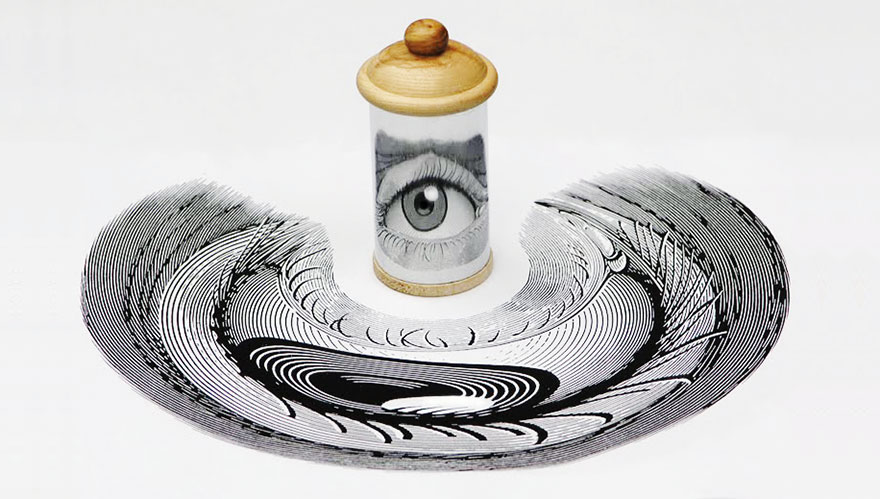

Mirror Sculptures
7 / 13 / 21
In high school, I spent a lot of time working on art and always liked to add mathy twists to my projects. Usually this was in the form of puzzles, codes, and references to specific fields but sometimes I would have an idea which would require some calculations to even get started on. One project I never got around to was my idea for 'mirror sculptures.' This was in part because I didn't have the tools necessary to build the sculpture but also because it was hard for me to plan out (most of my planning was done with pen and paper which seemed like it would be hard to do with this project).
These would be similar to cylindrical mirror art but would be gridded and have many more variations. Each sculpture would consist of wooden cubes stacked at various heights with a 45-degree mirror attached to the top facing in one of the four possible directions. Mirrors would reflect drawings on the sides of the sculpture upward to reveal the hidden image. This idea especially interested me since the number of unique sculptures to make was enormous as the size of the grid grew and, if planned correctly, I could hide multiple images that only the corresponding sculpture would reveal.

An example of cylindrical mirror art